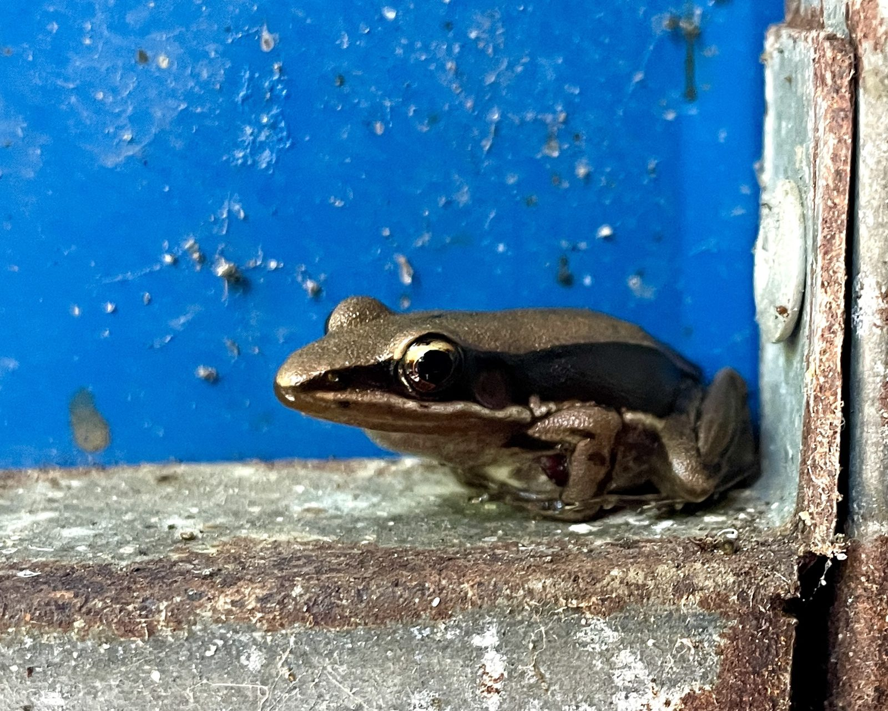

Change
Seven audio episodes sent over the course of March 2021, on the theme of change. Each includes reflections, Alexander Technique, meditation, and an optional exercise.
Each recording runs 10–15 minutes. A listening position is suggested for each episode — but find your own rhythm.
· · ·
Programme
1
Hair
2
The Hanging Sword
3
Narrative Machines
4
Footfalls
4b
Footfalls (without talking)
5
Starfish
6
Hunter & Prey

7
The Cellular Event